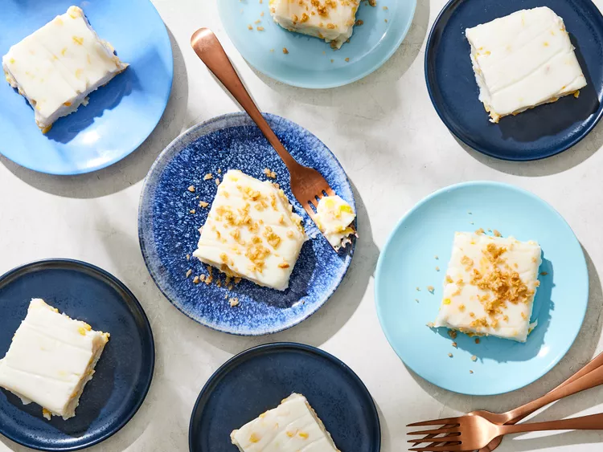

Biko

Description:
Filipino coconut dessert.
Ingredients:
- 4 cups uncooked glutinous white rice
- 6 cups cold water
- 1 (14 ounce) can coconut milk, divided
- 1 ⅓ cups white sugar
- 1 ⅓ cups brown sugar
- 3 tablespoons coconut preserves (such as Phil Supreme®)
Steps:
- Soak rice overnight in the water.
- Preheat oven to 350 degrees F (175 degrees C). Grease a 9x13 inch baking pan.
- Cook the soaked rice over medium heat in a saucepan with the soaking water, 1/2 can of coconut milk, and white sugar, stirring constantly, until tender and thickened, about 20 minutes. Pour into the prepared baking pan.
- Stir together the brown sugar, remaining 1/2 can of coconut milk, and coconut preserves in a small saucepan, and bring to a boil. Pour the mixture carefully over the rice.
- Bake in the preheated oven until the topping thickens, about 25 minutes. Cool completely; cut into squares to serve.